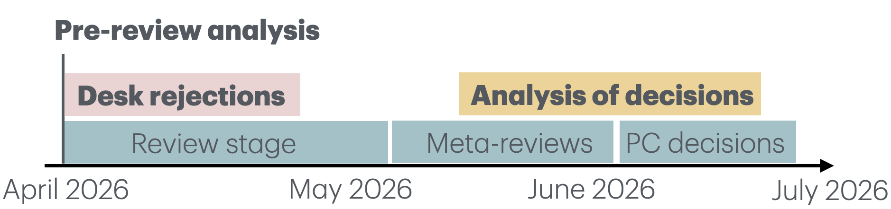
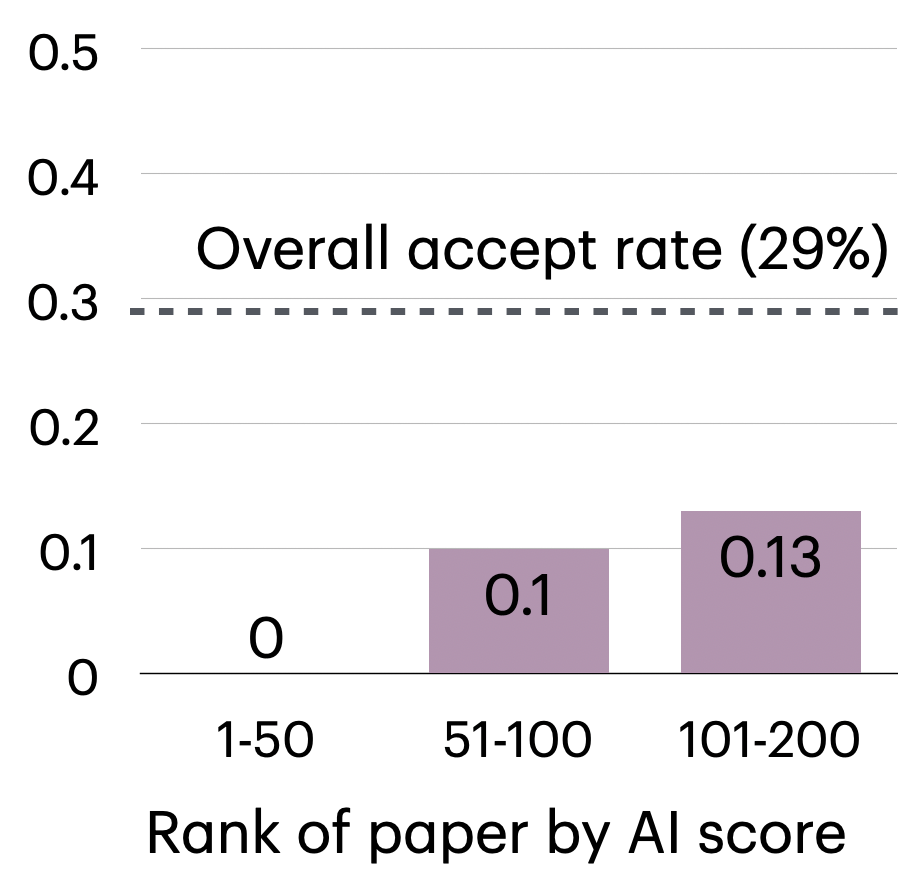

July 31, 2026
COLM 2026's deadline was March 31, 2026. Given the rise of coding agents in late 2025 and early 2026, this conference received a moderate number of agent-generated submissions. The call for papers stated that the following must be disclosed: "using an LLM to originate research ideas, using an LLM to write original content in the paper (including references), using an LLM to generate data or plots, using an LLM for evaluation."
This post details the program chairs' investigations and findings throughout the review process. As coding agents are moving quickly and tools are adapting, we do not intend this to be a prescription that other conferences should do exactly as we did. Rather, we describe our processes and our findings to enable others to learn from them.
No paper was desk-rejected on the basis of a detector result, and no AI detector results were shown to reviewers or ACs.

We coordinated with GPTZero to detect the use of AI in submissions. GPTZero ran two tools: (1) AI scoring on paper text (not using reference information); (2) hallucinated reference detection.
Process: GPTZero produced scores of each paper's AI use on a scale from 0-1, producing a total ordering of all submissions by amount of AI used.
We subsequently double-checked these scores with Pangram. Pangram agreed that all of GPTZero's top 50 predicted AI papers were either "AI" or "mixed".
Based on these tool outputs and looking at a few hundred papers, we estimated that roughly 5% of papers used AI very heavily or were primarily AI-generated. This is a conservative estimate: a very sophisticated custom agent might have escaped detection. Furthermore, it is hard to draw a firm boundary here, as we see a wide range of use of AI, between polishing grammar to writing sections to writing entire papers. No punitive actions were taken on the basis of detector results alone.
The PCs then inspected around 90 of the papers determined by GPTZero to be most AI-generated.
Actions:
Overall, roughly 2% of papers were desk-rejected for these criteria, not counting other desk-rejections due to formatting, anonymity violations, etc.
The cost-benefit tradeoff of more desk rejection was not favorable given our established processes. Due to the large gray area, substantial amounts of PC work would've been needed to confidently reject another 50-100 papers. This would only represent around 3% of submissions. We instead prioritized managing the review process and allowed the rest of the papers to stand for review.
Process: Hallucinated references were flagged by GPTZero across all submitted papers. The list allowed us to identify papers with completely hallucinated citations and those with large numbers of reference errors.
We saw three kinds of hallucinated references detected:
The PCs desk-rejected around 20 papers that had completely fabricated references in our analysis. Papers with only a few cases of "incorrect authors" were allowed to stand for review.
Remaining papers went through review as normal, without any indication of AI usage shown to reviewers or area chairs. Reviewers and ACs in some cases flagged cases of papers that they believed to be AI-generated, or hallucinated references that they traced down themselves. However, this was pretty rare (<1% of submissions).

After reviewers and meta-reviewers (ACs) produced their recommendations and PCs were making final decisions, we re-examined the top AI-detected papers according to GPTZero. After a first-pass bucketing based primarily on AC recommendations, we observed the following acceptance rates in this pool; see figure. To be precise, 0 papers out of the top 50 AI-scored papers were recommended for acceptance. 5 papers out of the 51-100 top AI-detected papers were recommended for acceptance, representing 10% of this pool.
Note that these statistics do not reflect final PC decisions, which included more scrutiny of edge cases. Five of these 200 papers ended up being rejected after this second phase.
Many AI-generated papers were low-quality and peer review weeded them out effectively:
Two types of papers were more likely to get through peer review.
Theoryslop:
Because this paper's contribution is primarily conceptual/theoretical, there's less of a need to have a very strong empirical core like baseline comparisons. Because COLM is not a CS/ML theory venue, the theory wasn't strongly evaluated on axes like taste or of interest to the CS/ML theory communities. Finally, because agents are pretty good at math, they can crank out a lot of theory, much of which is probably correct.
A few theoryslop papers were found to contain fatal errors by very hardworking reviewers. However, this is not a scalable solution. Without a uniformly exceptional review pool, such papers will not always be checked closely enough to find errors.
Slopterpretability:
Note: see this excellent post An Analysis of AI-Generated Content at the Mechanistic Interpretability Workshop for a description of these papers at the mechanistic interpretability workshop at ICML.
Theoryslop and slopterpretability papers can get high scores because: (1) Their main flaw is the quality and impact of the research question, which junior reviewers may find it hard to assess. (2) They are very technical, which both "pure" human reviewers and those leaning on LLMs may favor. (Note: we also conducted analysis of AI in reviewing as well but do not discuss here.)
Some papers ranked highly on AI detector scores and were recommended for acceptance even after careful consideration.
COLM is different from ML and *CL conferences in two big ways. First, it is much smaller. Second, it is not ranked on rankings like CORE, so papers in COLM "count" less than those in other venues for some researchers. As a result, it may be less of an attractive target for gaming. (We believe the quality of COLM papers is at least as high as those at other venues, and we don't view COLM acceptance as any less prestigious!)
COLM Senior Program Chair: Greg Durrett
COLM PCs: Aviral Kumar, Yulia Tsvetkov, and Yoon Kim
Thanks to GPTZero and Pangram for providing credits and conducting analyses in support of COLM. Thanks to Yoav Artzi (general chair) and Jonathan Kummerfeld for comments on an early draft of this post.